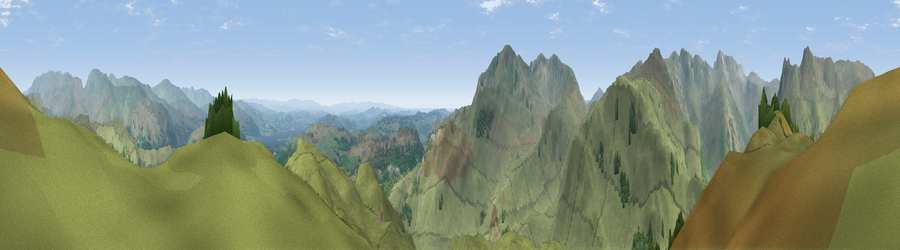

Viewpoint near Little Langdale
#2694 in England · top 21% of its area beats it · near Little Langdale · open accessWhere it is
The exact computed spot (NY 30275 04575). Click the marker for map links.
Public access: this spot lies on mapped open-access land (CRoW Act 2000) — you may roam here on foot. Computed from Natural England's CRoW access layer and OpenStreetMap rights of way — not the legal definitive map. Always verify locally.
The view, rendered

A 360° render of this exact spot computed from the terrain model, tree cover and land cover — summer colours, afternoon light, calibrated against photographs of famous viewpoints. Real trees, hedges and buildings will differ in detail.
The panorama
Grey silhouette: terrain skyline in each direction (720 bearings, Earth curvature and refraction included). Dashed green: skyline with trees (+15 m) and buildings (+8 m) as obstacles. Blue strip: how far the ground is visible on each bearing.
Where the view opens
Wedge length = distance to the farthest visible ground on that bearing (vegetation-aware). Rings at 10, 25 and 50 km.
What fills the view
91% grassland · 8% woodland
Angular shares of the visible panorama (visual magnitude), not map area. Landscape diversity 0.14 (0–1 Shannon).
Key numbers
More beautiful places nearby
The staircase of upgrades: each row has a higher view potential than everything closer. Driving times are estimates from straight-line distance, calibrated against real road routing — check an actual route before setting out.
| Place | Direction | Drive | Score |
|---|---|---|---|
| Viewpoint near Chapel Stile | NW · 4 km | ~8 min | 75.7 |
| Wetherlam | SSW · 4 km | ~9 min | 82.3 |
| Viewpoint near Coniston | SW · 5 km | ~11 min | 82.8 |
| Brim Fell | SSW · 7 km | ~14 min | 83.9 |
| Old Man of Coniston | SSW · 7 km | ~15 min | 85.2 |
| Illgill Head | W · 14 km | ~25 min | 88.4 |
| Viewpoint near Boot | W · 14 km | ~25 min | 88.9 |
| Viewpoint near Finsthwaite | SSE · 18 km | ~31 min | 90.3 |
54.43179, -3.07635 · source: screening · position refined by local search. Computed location — check access rights before visiting.